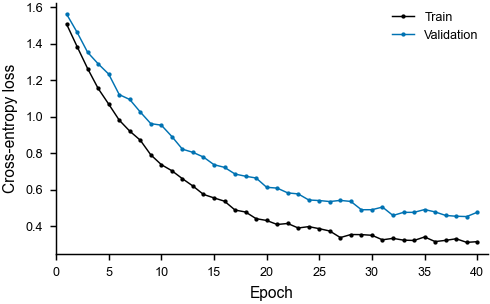

Training and validation loss
A small transformer trained for 40 epochs. The validation curve flattens after epoch 25 while the training loss keeps falling.
01-learning-curves.yaml
1 error 1 warning
deep-learningtraining
spec
version: 1
meta:
title: Training and validation loss
description: >-
A small transformer trained for 40 epochs. The validation curve flattens
after epoch 25 while the training loss keeps falling.
tags: [deep-learning, training]
figure:
journal: nature
layout: single
formats: [pdf, svg, png]
style:
palette: okabe-ito
axes:
x:
label: Epoch
limits: [0, 41]
y:
label: Cross-entropy loss
series:
- type: line
data: data/loss.csv
x: epoch
y: [train, val]
labels: [Train, Validation]
marker: o
markersize: 2.2